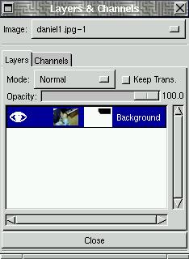
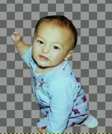

![[LinuxFocus Image]](../../common/March1998/border-short.jpg)
| Noticias Archivos Compañías Consejos |
... El Gimppor Phillip Ross |
|
El programa de tratamiento de imágenes GNU (esto es, The GIMP) a estado en desarrollo bastante tiempo y las primeras versiones dejaban mucho que desear. Desde entonces GIMP a recorrido un largo camino y es mucho más potente que las primeras versiones. Aquellos que estaban decepcionados por las deficiencias de las primeras versiones, están obligados a probar algunas de las más recientes versiones de las series 0.99.xx. Espero demostrar que GIMP es más que una herramienta viable para hacer gráficos profesionales. Este artículo es el primero de una serie que pretenden enseñar como uno puede usar GIMP para conseguir los mismos efectos que uno es capaz de hacer con Adobe Photoshop. Juan Manuel Sepulveda ha estado mostrando algunos bonitos efectos que una artista puede hacer con Photoshop, y yo enseñaré como hacer lo mismo con GIMP. En su primer artículo montaba una bonita escena con Daniel como protagonista. Probablemente, en nuestros primeros artículos, nos concentraremos en cómo construiré esta escena con Photoshop y GIMP. En este artículo explica específicamente cómo usar GIMP para aislar a Daniel del resto del fondo de la imagen. | |
El Recortado | |
| Gimp ofrece muchas formas de recortar partes específicas de una imagen del resto de la escena. La forma en que Juan lo hizo puede ser realizada con GIMP usando herramientas similares, por tanto, primero veremos como usar GIMP de la misma forma. | |
| Atención:Debes tener buen pulso y un buen ratón para hacer esto con eficacia ¡La práctica hace maestros! | |
| Primero, observa los cuadrados en la caja de herramientas de GIMP. Allí hay una herramienta de selección libre en la esquina de arriba a la derecha. Queremos usar esta herramienta primero. Activa la herramienta pulsando sobre ella con el ratón y ya estamos preparados para empezar a recortar. | |
| Por supuesto necesitamos la imagen de Daniel, así que cargala. Deberás hacer un zoom de la imagen para poder ver el corte más cerca. Esto se puede hacer llevando el ratón a la ventana de la imagen para darle el foco y presionando tus teclas de más (+) y menos (-) en el teclado. Aunque el símbolo más es realmente SHIFT-igual, puedes simplemente presionar la tecla sin el SHIFT y GIMP sa rá que quieres acercar la imagen. Por tanto puedes usar el más y el menos para conseguir el nivel de zoom más conveniente y redimensionar la ventana a tus preferencias para tener toda la imagen de Daniel a la vista. Si tienes la ventana de la imagen en el foco del ratón, y pulsas el botón derecho del ratón, aparecerá un pequeño menú. En él hay una opcion llamada View. Si eliges View, se abrirá un sub-menú que ofrece operaciones como Zoom-In y Zoom-Out, pero también hay un menú bajo la opción de Zoom que permitá elegir el valor exacto de zoom. Yo eligo la opción 1:2 para hacer la selección. | |
 Una
vez tenemos el aumento deseado y Daniel es completamente visible,
queremos empezar a seleccionar. Aquí es donde debemos tener una mano
firme. Aseguraté que tienes seleccionada la herramienta Free Select,
aprieta el botón izquierdo del ratón y mueve el cursor alrededor de
la silueta de Daniel. Mientras mueves el cursor del ratón, el borde
de la selección que estas haciendo se creará. Tan pronto como sueltes
el botón izquierdo del ratón, la región de selección se
completará. Una línea de selección se dibujará desde donde dejaste de
apretar el botón hasta el principo del área seleccionada. Ve con
cuidado y haz la selección recorriendo completamente la imagen de
Daniel, bordeando su graciosa cabecita y su pijama por fuera, y
acabando donde empezaste. Cuando sueltes el botón, su imagen entera
deber estar repasada, y una línea de puntos animada nos enseñará el
borde de la selección. Una
vez tenemos el aumento deseado y Daniel es completamente visible,
queremos empezar a seleccionar. Aquí es donde debemos tener una mano
firme. Aseguraté que tienes seleccionada la herramienta Free Select,
aprieta el botón izquierdo del ratón y mueve el cursor alrededor de
la silueta de Daniel. Mientras mueves el cursor del ratón, el borde
de la selección que estas haciendo se creará. Tan pronto como sueltes
el botón izquierdo del ratón, la región de selección se
completará. Una línea de selección se dibujará desde donde dejaste de
apretar el botón hasta el principo del área seleccionada. Ve con
cuidado y haz la selección recorriendo completamente la imagen de
Daniel, bordeando su graciosa cabecita y su pijama por fuera, y
acabando donde empezaste. Cuando sueltes el botón, su imagen entera
deber estar repasada, y una línea de puntos animada nos enseñará el
borde de la selección.
| |
| En estos momentos, la región de la imagen que está seleccionada incluye todo lo que hay DENTRO de la línea de puntos animada. Nosotros queremos recortar todo menos la región de dentro, por tando necesitamos "invertir" la selección para seleccionarlo todo menos la imagen de Daniel. Esto es simple. Aseguraté de que tu ratón está sobre la región de la imagen y presiona el botón derecho del ratón. Selecciona el submenú Select y a continuación la opción Invert. Observa que existe una secuencia de teclas para la opción Insert. Control-I es la secuencia para invertir la selección. En vez de elegir la opción desde un menú, puedes usar la secuencia de teclas para hacer lo mismo. Por tanto haz lo que quieras para invertir la selección. Después de invertir, verás que la línea de puntos animada aún está alrededor de Daniel, pero tambiés hay otra línea alrededor del perímetro de la imagen. Si no ves una, durante el proceso de acercamiento es posible que hayas hecho la imagen más grande que la ventana en la que estás viendo la imagen, por tanto deberás usar las barras de desplazamiento para desplazarte sobre la imagen. Una vez que tienes los dos conjuntos de líneas de puntos animadas, sabrás que todo lo que hay entre estas líneas está seleccionado. Afortunadamente todo entre las dos líneas de puntos corresponde a toda la imagen excepto Daniel. | |
| Una vez tenemos la selección correcta, todo menos la imagen de Daniel, queremos recortarla. Sin embargo, antes de recortar, deberíamos difuminar la selección para que el borde en el que se realiza el recorte no sea abrupto ni pixelado. Difuminandolo lo haremos más suave. Presiona el botón derecho para obtener nuestro menú, selecciona el submenú Select y a continuación "Feather". La secuencia de teclas para hacer esto es Shift-Control-F. Después de esto, la caja de diálogo de la selección de difuminardo aparece y te permitirá elegir la cantidad de difuminado para la selección. Puedes experimentar con esta cantidad para ver la que produce el mejor resultado. Yo usé el valor 5. | |
|
No podrás ver el resultado hasta que limpies la selección. Si no te gusta el resultado después de limpiar la selección puedes usar la opción Undo dos veces para restaurar la seleccion y el difuminado de la selección. Desde aquí puedes usar la opción de difuminado otra vez y elegir otra cantidad para difuminar. Para limpiar la selección debes ir al menú con el botón derecho, elgir del submenú Edit y a continuación Clear. Control-K es la secuencia de teclas para limpiar. Si no te gustan los resultados, puedes volver atrás y jugar con la cantidad de difuminado usando el menú, la opción Edit y Undo. La secuencia de teclas para deshacer es Control-Z. Después de limpiar, debes tener una imagen con un recorte suave de Daniel. Como dije, debes tener una mano firme para hacer este trabajo, así que la práctica hace la perfección. | |
El Enmascarado | |
| Para aquellos de vosotros que no tengaís una mano firme (lo cual me incluye a mi), existe otro método, que prefiero, para recortar fondos de imágenes que pasaré a explicar ahora. Este método incluye la caja de dialogo Layers/Channels (Capas/Canales). | |
| Primero, queremos cargar la foto de Daniel. La imagen que tengo está en formato JPEG, y GIMP carga los JPEGs en formato RGB truecolor. En el título de la ventana de la imagen especificará qué formato de la imagen es entre paréntesis. en caso de que la imagen estuviera en algún otro formato, como GIF, GIMP lo cargará como imagen de color indexado, por tanto debes convertirla a RGB para nuestros propósitos. Para convertir de color indexado a RGB, presiona el botón derecho en la ventana de la imagen y elige el submenú Image. En este submenú están las opciones RGB, Greyscale e Indexed. Elige el formato que quieras para convertirla...Para nuesta demo queremos RGB. Después de hacer click es esta opción, nuestra imagen es convertida a RGB. Como el formato RGB es capaz de representar más colores, convertir de RGB a indexado y otra vez a RGB puede reducir la calidad de la imagen. Por tanto si empiezas en formato RGB, mantente en este formato si es posible. | |
| Una vez que sabemos que la imagen está en formato RGB, estamos preparados para hacer el recorte. Con el botón derecho en la ventana de la imagen elige el submenú Dialog. En este submenú selecciona la opción Layers and Channels (la abreviatura para esto es Control-L). La caja de diálogo Layers/Channels aparece y ya estamos preparados para empezar a aprender a usarla. Esta caja de diálogo nos permite editar las capas de la imagen y sus canales. Por ahora nos concentraremos en las capas. | |
| Una imagen puede tener multiples capas en GIMP y podemos editar las capas independientemente unas de otras. Hasta ahora sólo vemos una capa que tiene una pequeña versión de la imagen de Daniel. Tendrá un icono como un ojo a la izquierda y el título de la capa a la derecha. El título de la capa deber ser "Background" (fondo). El ojo está aquí para decirnos que la capa, actualmente, es visible en la ventana de la imagen. Si tenemos multiples capas, podemos hacer algunas visibles y otras no activando o desactivando el ojo de esa capa. Puedes activar y desactivar pulsando sobre el icono (o donde debería estar el icono si no hay ninguno) por ahora, como estamos trabajando con solo una capa, esto funcionará para nosotros. Por ahora, trabajaremos solo con una capa, pero necesitaremos hacer operaciones en la capa que requieren la caja de diálogo de las capas. | |
|
Hasta ahora la imagen de Daniel debe estar en formato RGB. RGB, por supuesto, viene de Red-Green-Blue (Rojo-Verde-Azul). Cada pixel de la imagen tiene un valor separado para rojo, verde y azul, y estos valores combinados controlan el color del pixel correspondiente. Si desconoces esto, intenta encontrar un manual de teoría del color. Lo que necesitamos es poner la imagen en un formato que tenga un valor adicional aparte del rojo, verde o azul. Este valor adicional se llama valor alpha. El valor alpha, o canal alpha, se puede usar para varias cosas, pero para nuestros propósitos lo usaremos como "valor de opacidad". Cuanta más opacidad tenga un pixel, menos puedes ver a través de ella. Si un pixel tiene opacidad 0, puedes ver completamente a través de él, no puedes ver el propio pixel. En la caja de diálogo Layers/Channels podrás encotrar la barra de opacidad, y ésta controla la opacidad de la capa entera. Si la desplazas hacia la izquierda, el valor de opacidad baja y puedes ver a través de la imagen. Este valor de opacidad controla el grado en el que se puede ver a través de la imagen, o en otras palabras, cómo es de transparente es la imagen. Lo que puedes hacer es crear varias capas en una imagen y tener una capa semitransparente para ver a su través la siguiente capa. Esto se puede hacer para conseguir algunos bonitos efectos, pero no queremos usarlos ahora. Adem s, GIMP nos muestra qué parte de la imagen es transparente enseñandonos un "tablero de ajedrez" gris. Veréis de lo que hablo cuando empezéis a trabajar con transparecias. En vez de usar la barra de opacidad para hacer la capa transparente, sólo queremos hacer transparente parte de la imagen, concretamente todo menos la imagen de Daniel. Para hacer esto, necesitamos darle a la imagen un cabal alpha. Para ello, ponemos el cursor del ratón encima del título de la capa y presionamos el botón derecho. Esto nos sacará un menú con algunas opciones. La opción que queremos es "Add Alpha Channel" (Añadir canal alpha). Después de seleccionar esta opción, el canal alfa se añadirá y verás que en el título de la imagen ahora pone (RGB-alpha). | |
| Ahora podemos añadir una "layer mask" (máscara de capa) para que nos ayude con nuestro recorte. Una máscara de capa nos permitirá enmascarar la parte de la imagen que no queremos. Queremos enmascararlo todo menos la imagen de Daniel. Podemos añadir una máscara con el botón derecho en el título de la capa y seleccionando la opción "Add Layer Mask". Después de elegir esta opción, debes tener una caja de dialogo de "Add Mask Options". Esto nos permitirá elegir el valor inicial de la capa. Ahora mismo no sabrás qué elegir ni qué efectos producirá, así que elige White (Blanco) que es opacidad máxima por ahora. | |
| Después de elegir el valor inicial de la caja de diálogos y darle al OK, verás que en la caja de diálogos Layers/Channels se ha creado una nueva imagen blanca y que está entre la imagen original de Daniel y el título de la capa. Ésta es la máscara de la capa que acabamos de crear. Peresiona sobre la imagen de la máscara para activarla. Si no pasa nada, prueba a presionar sobre la imagen de la capa a la derecha y verás un borde blanco pasar de la m scara a la imagen. Esto nos dice que la capa de la imagen está ahora activa, y ahora presionaremos en la capa de la máscara para activarla. | |
| Después de activar la capa de la máscara, puedes dibujar en ella para enmascarar la capa de imagen. Donde dibujes en la capa de máscara con NEGRO, la capa de la imagen se volverá transparente. Donde dibujes con BLANCO la imagen será opaca. Usando diferentes valores de grises puedes hacer la capa semitransparente. Cuanto más oscuro sea el gris, más transparente se volverá. También puedes dibujar en la capa de la máscara con colores para enmascarar canales de colores específicos, pero no necesitamos hacer esto por ahora. De momento trabajaremos con blanco y negor para enmascarar la imagen. Si miras debajo verás que en la caja de diálogo Layers/Channels estoy pintando la capa de máscara negra y está volviendo a la imagen transparente. | |
|  | |
|  Ahora puedes usar cualquier brocha que quieras para dibujar alrededor de la imagen de Daniel en negro, y esto hará la imagen transparente donde dibujes en la capa de máscara. Yo he usado la brocha Circle Fuzzy (07) 7x7 para dibujar cerca de Daniel y brochas más grandes para limpiar el resto. Me gusta más éste método porque si enmascaro algo que no quiero por accidente (porque mi mano no es muy firme) sólo tengo que dibujar con blanco otra vez y la imagen reaparecerá. A la derecha está mi emascaramiento final. | |
| Ya tenemos nuestra máscara, pero aún tenemos que aplicarla para enmascarar la imagen. Esto se hace fácilmente con la opción "Apply Layer Mask" (aplicar capa de máscara) en el menú de la caja de diálogos Layers/Channels. Cuando elegimos esta opción del menú, aparecerá la caja de diálogo de la capa de máscara. Puedes elegir aplicar la máscara o simplemente descartarla si no la queremos más. Nosotros la queremos, así que elegimos aplicar (apply), y la parte de la imagen que hemos enmascarado es ahora transparente. Ahora podemos crear capas adicionales bajo esta capa y podremos ver a través de la parte transparente de esta capa. Podemos poner nuestro fondo y texto en capas por debajo de ésta, pero esto será para la próxima vez. | |
Traducido por Carlos Calzada Grau
- Read other articles in this series.
- Consult the Gimp user Manual.
- Other articles by the same author: Hardware Review: OpenGL & GLUT with Voodoo 3Dfx in Mind, Hardware Review: 3Dfx Graphics Card.
This website is mantained by Miguel A Sepulveda.